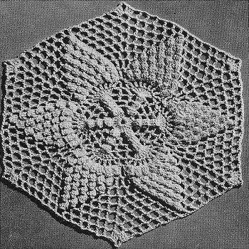
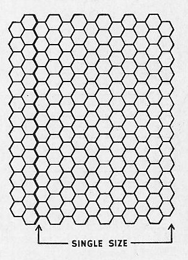

Pineapple Popcorn Bedspread - Free Crochet Pattern MATERIALS: SINGLE SIZE: J. & P. COATS KNIT-CRO-SHEEN 50 balls of White or Ecru, or 80 balls of any color. DOUBLE SIZE: J. & P. COATS KNIT-CRO-SHEEN 59 balls of White or Ecru, or 93 balls of any color. Milward's Steel Crochet Hook No. 7. GAUGE: Each motif measures about 7 inches from side to side; 8 inches from point to point diagonally. For a single size spread about 90 x 108 inches (including fringe), make 148 motifs. For a double size spread about 75 x 108 inches (including fringe), make 175 motifs. MOTIF: Starting at center, ch 8. Join with sl st to form a ring. 1st rnd: Ch 3, 17 dc in ring. Sl st in top of ch-3. 2nd rnd: Ch 3, 4 dc in same place as sl st, drop loop from hook, insert hook in top of ch-3 and draw dropped loop through (a starting pc st made), * ch 4, skip 2 dc, pc st in next dc - to make a pc st, ch 1, make 5 dc in same place, drop loop from hook, insert hook in ch preceding the 5 dc and draw dropped loop through. Repeat from * around, ending with ch 4, sl st in tip of first pc st made. 3rd rnd: Ch 3 and complete a starting pc st in same place as sl st, * ch 3, dc in next sp, ch 3, pc st in tip of next pc st. Repeat from * around, ending with ch 3, sl st in tip of 1st pc st. 4th rnd: Ch 3 and complete a starting pc st in same place as sl st, * (ch 2, dc in next sp) twice; ch 2, pc st in tip of next pc st. Repeat from * around, ending with ch 2, sl st in tip of 1st pc st. 5th rnd: Ch 3, 7 dc in same place as sl st (this is base of pineapple), * (ch 2, dc in next dc) twice; ch 2, 8 dc in tip of next pc st. Repeat from * around, ending with ch 2, sl st in top of ch-3. 6th rnd: Ch 4, (dc in next dc, ch 1) 6 times; dc in next 2 dc, * ch 2, dc in next 2 dc, (ch 1, dc in next dc) 7 times; dc in next dc. Repeat from * around, ending with sl st in 3rd st of ch-4. 7th rnd: Sl st in sp, ch 3 and complete a starting pc st in same place, (ch 1, pc st in next sp) 6 times; * ch 2, skip next dc, dc in next dc, ch 2, dc in next dc, ch 2, skip next dc, (pc st in next sp, ch 1) 6 times; pc st in next sp. Repeat from * around, ending with ch 2, sl st in tip of 1st pc st made. 8th rnd: Sl st in sp, ch 3 and complete a starting pc st, * (ch 2, pc st in next sp) 5 times (6 pc sts in pineapple). * (Ch 2, dc in next sp) 3 times, (ch 2, pc st in next sp) 6 times. Repeat from * around (4 ch-2 sps between pineapples), ending with ch 2, sl st in tip of first pc st. 9th rnd: Work as for 8th rnd, having 5 pc sts in each pineapple, and 5 ch-2 sps between pineapples. 10th rnd: * Make 4 pc sts, (ch 2, dc in next sp) 3 times; ch 2, dc in same sp (increase sp made), ch 2, dc in next sp twice, ch 2. Repeat from * around. Join. 11th to 13th rnds: Work as for 10th rnd, making 1 pc st less on each pineapple on each rnd, and working dc, ch 2 and dc in each increase sp. Join. 14th rnd: Sl st in next ch, sc in sp, ch 5, * dc in next sp, ch 2. Repeat from * to the increase sp, in increase sp make 3 dc, ch 2 and 3 dc; ch 2, dc in next sp. Continue in this manner around. Join with sl st to 3rd st of ch-5. Fasten off. Make necessary number of motifs and sew together on wrong side with neat over-and-over stitches (see diagram). FRINGE: Make fringe in each sp around as follows: Cut 8 strands, each 12 inches long. Double these strands, forming a loop. Pull loop through sp and draw loose ends through loop. Pull tight. When fringe has been worked around all edges, trim evenly.  HOME |